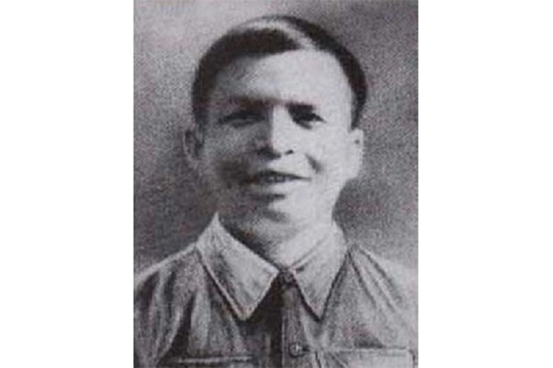
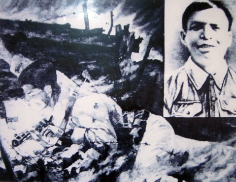

Phan Đình Giót (1922 – 1954) quê ở thôn Vĩnh Yên, xã Tam Quan, huyện Cẩm Xuyên, tỉnh Hà Tĩnh. Gia đình anh rất nghèo, từ năm 13 tuổi anh đã phải đi ở, làm thuê. Sau Cách mạng Tháng Tám, anh tham gia tự vệ chiến đấu và đến năm 1950, xung phong vào bộ đội.
Sống trong quân ngũ, Phan Đình Giót luôn tự giác, gương mẫu, hết lòng yêu thương đồng đội, sẵn sàng nhận khó khăn về mình, nhường thuận lợi cho bạn nên được mọi người mến phục, tin yêu.

Trong cuộc đời chiến đấu, anh đã tham gia nhiều chiến dịch lớn như Trung Du, Hòa Bình, Tây Bắc và đặc biệt là Chiến dịch Điện Biên Phủ. Anh từng hai lần bị thương nặng nhưng vẫn kiên cường chiến đấu.
Mới ba tháng tuổi quân, anh đã tham gia trận đánh đồn Tràng Bạch trên Đường 18. Trong trận đánh vị trí Chùa Tiếng cuối năm 1950, anh bí mật tiếp cận hàng rào địch, đặt bộc phá tiêu diệt lô cốt số một, tạo điều kiện cho đơn vị giành thắng lợi.
Trong Chiến dịch Điện Biên Phủ, Phan Đình Giót cùng đơn vị hành quân gần 500 km qua nhiều địa hình hiểm trở. Dù bị thương ở chân, anh vẫn kiên cường chiến đấu, chăm lo cho đồng đội như một người anh cả.

Chiều ngày 13-3-1954, Trung đoàn 141, Đại đoàn 312 nổ súng tấn công cứ điểm Him Lam. Trong quá trình chiến đấu, Phan Đình Giót bị thương nhiều lần nhưng vẫn chỉ huy trung đội chiến đấu. Khi hỏa điểm địch chặn đứng đợt tiến công, anh bò đến gần, dùng tiểu liên tiêu diệt địch. Khi hết đạn, anh hét lớn: “Quyết hy sinh vì Đảng, vì dân!” rồi dùng chính thân mình bịt lỗ châu mai, dập tắt hỏa điểm, mở đường cho đơn vị xung phong tiêu diệt cứ điểm Him Lam.
Phan Đình Giót hy sinh lúc 22 giờ 30 phút ngày 13-3-1954. Ngày 31-3-1955, anh được truy tặng danh hiệu Anh hùng Lực lượng vũ trang nhân dân và Huân chương Quân công hạng Nhì. Khi hy sinh, anh là Tiểu đội phó bộ binh Đại đội 58, Tiểu đoàn 428, Trung đoàn 141, Đại đoàn 312 và là đảng viên Đảng Cộng sản Việt Nam.
Quay lại Quiz